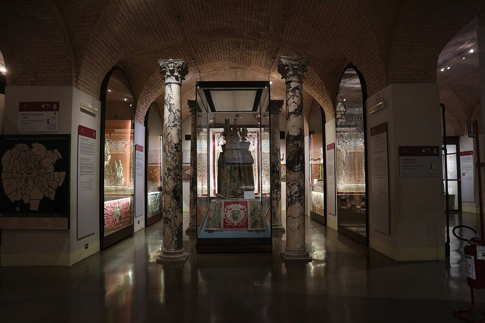
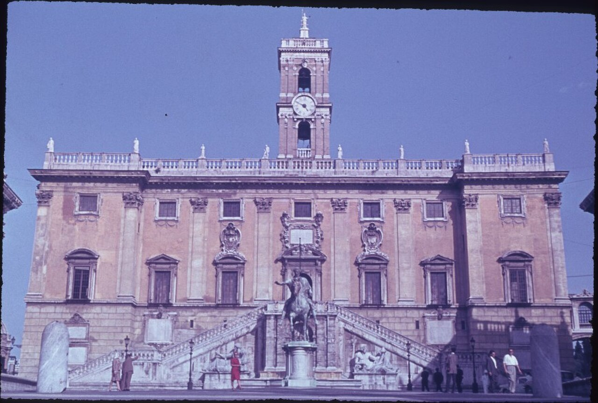

Historical and reference coats of arms


Rome
Guide. Places in this edition: 41.
OTIUM is the practice of deliberate leisure. In the classical sense, otium is not escape from work but time when attention returns to memory, landscape, and thought — without a utilitarian deadline.
We shape routes for lingering, not for checklist tourism. The goal is presence in a place rather than consumption of sights.
OTIUM is not a tour operator. It is an invitation to walk, pause, and leave a route unfinished if the light on a façade deserves another minute.
Historical and reference coats of arms
Guide. Places in this edition: 41.
Albert-Square-JohnBright.jpg

Via Appia Antica

Аппианова дорога (лат. Via Appia Antica), построенная в 312 году до н.э., была первой крупной римской дорогой, соединявшей Рим с Капуей и Тарентом. Она сыграла ключевую роль в развитии торговли и военных походов Древнего Рима, став символом могущества империи. Сегодня сохранились участки дороги длиной около 50 км от Рима до Альбано, являющиеся памятником истории и культуры.
Аппианова дорога привлекает туристов своей атмосферой древности и позволяет увидеть сохранившиеся фрагменты древнеримских сооружений, включая арки, храмы и акведуки.
Museo dell'Ara Pacis

Richard Meier glass-and-stone pavilion sheltering Augustus' altar of peace reliefs.
Altar founded 9 BCE; 20th-century excavation and controversial modern wrapping.
Augustan propaganda in botanical friezes—telluric calm after civil wars.
Arco di Costantino

Imperial triumphal arch recycling earlier reliefs—political collage beside the amphitheatre.
Dedicated 315 CE after Milvian Bridge victory; spolia study set for art historians.
Framing element in almost every classic Colosseum postcard.
San Paolo fuori le Mura

Базилика Святого Павла вне стен была построена в V веке н.э., изначально как скромная церковь монахами Бенедиктинского ордена. Со временем она стала одной из крупнейших базилик Рима благодаря расширению и реконструкции. Это место считается важным памятником христианской архитектуры и символом мученичества святого апостола Павла.
Базилика привлекает паломников и туристов своей историей и архитектурной ценностью, являясь одним из главных мест почитания апостола Павла.
San Clemente

Базилика Сан-Клементе — археологический комплекс, расположенный под церковью Санта-Чечилия-ин-Латерано в Риме. Это уникальное место сочетает раннехристианские постройки III века, византийские мозаики VI века и романский храм XII века. Базилика известна своей многослойной историей и сохранившимися артефактами, демонстрирующими развитие христианской архитектуры и искусства.
Базилика привлекает туристов и исследователей благодаря редкой возможности увидеть одновременно три периода развития христианского искусства и архитектуры.
Santa Maria Maggiore

Базилика Санта-Мария-Маджоре — одна из древнейших базилик Рима, построенная в V веке н.э. по указу императора Феодосия I. Считается первой церковью, посвящённой Деве Марии. Здесь хранятся важные христианские реликвии, включая львиный трон Богородицы и звезду Вифлеемскую.
Базилика привлекает паломников и туристов благодаря своей уникальной архитектуре и историческим ценностям.
Terme di Caracalla

Imperial bath complex—vaulted halls, mosaic scraps, and summer opera staging.
Opened early 3rd century CE; water and spectacle on a neighbourhood scale.
Open-air ruins teach Roman infrastructure without museum glass.
Campo de' Fiori

Площадь Кампо деи Фьори возникла в Средние века на месте рыночной площади Рима, где торговали овощами и цветами. Со временем площадь стала местом публичных казней, отсюда её название, означающее «поле цветов». В XVII веке здесь был обезглавлен Джордано Бруно, философ и астроном, чьи идеи опережали своё время.
Кампо деи Фьори привлекает туристов своей атмосферой старинной римской жизни, живописными цветочными рядами и историческими памятниками.
Campidoglio

Michelangelo's trapezoidal piazza, equestrian Marcus Aurelius, and palazzi that host the city museum.
Religious centre of archaic Rome; Renaissance replanning cleared medieval clutter.
Balcony over the Forum remains one of the best urban belvederes.
Santa Maria della Concezione

Капуцинская крипта — подземное кладбище капуцинского монастыря в Риме, построенное в XVII веке. Здесь захоронены монахи ордена капуцинов, умершие от чумы и оспы. Крипта известна своими необычными саркофагами, украшенными гипсовыми масками лиц усопших.
Особенность Капуцкой крипты заключается в реалистичных гипсовых масках, отображающих лица покойников, благодаря чему посетители могут увидеть черты людей, давно ушедших из жизни.
Castel Sant'Angelo

Cylinder tomb of Hadrian turned fortress, prison, and museum—linked to the Vatican by the elevated passage.
Antiquity through papal refuge in sieges; angel statue gives city its name anecdote.
Terrace views along the Tiber bend toward the dome.
Church San Rocco, Rome, Italy.jpg

Colosseo

Huge Flavian amphitheatre—symbol of imperial Rome and still a reference for crowds, games, and engineering.
Opened around 80 CE; quarry for builders in later ages; modern conservation balances access with structure stress.
UNESCO heart of the historic centre; evenings emphasize silhouette and lit arches.
Jewish Museum (Rome).jpg

Kapitol, Palazzo, Rom.jpg

Largo Argentina

Sacred area with Republican temple pediments below street level—cat sanctuary in the excavation pit.
Temples A–D identified by debate; Caesar fell nearby in the Curia of Pompey's theatre.
Archaeology meets feline charity under traffic roar.
Mausoleo di Augusto

Мавзолей Августа был построен в I веке до н.э. по приказу императора Октавиана Августа и стал первым императорским мавзолеем Рима. Сооружение служило местом погребения самого Августа и членов его семьи. Мавзолей представлял собой массивное круглое здание с куполом, окружённое колоннадой и террасами.
Это одно из первых монументальных сооружений Древнего Рима, посвящённых императорской семье.
Testaccio

Монте-Тестаччо — большая искусственная гора из керамических обломков, расположенная на юго-западе Рима. Она возникла в результате деятельности римских гончаров и мусорщиков, которые выбрасывали битую посуду прямо рядом с городом. Высота горы составляет около 36 метров, диаметр основания — примерно 300 метров. Это место служило свалкой почти тысячу лет, начиная с I века до н.э., пока окончательно не перестало использоваться во II веке н.э.
Монте-Тестаччо является уникальным археологическим памятником, демонстрирующим повседневную жизнь древних римлян и масштабы их производства и потребления керамики.
Moschea 00497.JPG

Bocca della Verità

Ancient manhole mask carved as river god face—Hollywood made it an honesty gag.
Medieval transfer to the church porch; queue photos keep the myth alive.
Quick stop beside the tiny Cosmati-floored church.
Galleria Nazionale d'Arte Antica

Палаццо Барберини — дворец эпохи барокко, построенный в XVII веке по проекту архитектора Гварино Гварини для папы Иннокентия X и кардинала Франческо Барберини. Здание стало символом роскоши и власти римской аристократии своего времени.
Знаменит своими коллекциями произведений искусства эпохи Возрождения и барокко, включая работы Караваджо, Бернини и других выдающихся мастеров.
Pantheon

Domed temple-turned-church with the world's largest unreinforced concrete dome and clear oculus.
Hadrianic rebuilding on an earlier plan; Christian consecration saved it from spoliation.
Raphael's tomb and free entry for worship balance with tourist crowding at midday.
Campidoglio

Пьяцца дель Кампидольо — центральная площадь Рима, расположенная на Капитолийском холме. Построена в XVI веке архитектором Микеланджело Буонарроти по заказу Папы Юлия II. Площадь символизирует власть папского государства и является одним из выдающихся примеров ренессансной архитектуры. Здесь проходили важные государственные мероприятия и церемонии.
Главная площадь Рима, отражающая величие и могущество папской власти, место проведения значимых государственных событий.
Piazza del Popolo

Пьяцца делла Пополо — одна из главных площадей Рима, расположенная между холмами Пинчо и Целий. Она была построена в XVII веке по проекту Франческо Борромини и стала символом барочной архитектуры города. Архитектурный ансамбль площади включает две церкви — Санта-Мария-деи-Мираколи и Санта-Кроче-ин-Джерусалемме, соединённые аркой Порта-Популо.
Площадь привлекает туристов своей уникальной архитектурой и живописной атмосферой, является популярным местом встреч и прогулок жителей Рима.
Piazza Navona

Stadium footprint turned Baroque salon—Bernini's Four Rivers versus Borromini's church façade story.
Ancient athletics track; Innocent X Pamphilj reshaped family palaces and fountains in the 1600s.
Street artists, Christmas market stalls, and night façades.
Ponte Sant'Angelo

Angels with instruments cross the bridge—Bernini workshop sculpture lining Hadrian's river crossing.
Ancient core widened; Baroque promotion to pilgrimage décor.
Classic dusk alignment with castle and dome backdrop.
Jewish Ghetto

Портик Октавии был построен в I веке н.э. по приказу императора Нерона в честь своей сестры Октавии Младшей, жены императора Клавдия. Изначально портик украшал форум Романум и служил местом проведения общественных мероприятий.
Здание является важным памятником древнеримской архитектуры и культуры, сохранившимся до наших дней.
Piramide Cestia

Narrow limestone pyramid wedged into the Aurelian Wall—Egyptomania of the late Republic.
Tomb for magistrate Caius Cestius; incorporated into defensive circuit.
Strange skyline punctuation beside the Protestant Cemetery gate.
Foro Romano

Civic core of ancient Rome—temple basements, basilica foundations, and worn Via Sacra paving.
Republican meeting place; imperial rebuilding; medieval reuse as pasture—hence 'Campo Vaccino'.
Layers from Rostra speeches to triumphal processions readable with a map.
San Giovanni in Laterano 2021.jpg

Basilica di Santa Maria in Trastevere

Early basilica famous for glittering 12th-century mosaics in the apse and façade crown.
Legendary founding ties to pope Callixtus; medieval rebuild shapes today's nave.
Anchor of Trastevere's evening life beyond the portraits.
Scalinata di Trinità dei Monti

Wide staircase linking the French church of Trinità dei Monti to the Barcaccia fountain below.
18th-century design; recent rules ban sitting on the steps—polite lingering standing only.
Fashion-week scenery and azalea ribbons in spring.
Basilica di San Pietro in Vaticano

Renaissance-Baroque basilica whose dome dominates the skyline; this card stresses the exterior approach.
Bramante, Michelangelo, Maderno, and Bernini shaped successive campaigns across the 16th–17th centuries.
Major pilgrimage goal; dress modestly in the piazza and expect security queues.
Colonna Traiana

Spiral relief chronicle of the Dacian wars—engineering feat inside its own courtyard.
Dedicated 113 CE; base once held ashes of Trajan and Plotina.
Scholars still read the helical narrative like a strip cartoon of empire.
Fontana di Trevi

Baroque terminus of the Aqua Virgo acqueduct—Nicola Salvi's stone theatre of sea myths.
Completed in the 1760s; coin-toss folklore funds charitable maintenance today.
Night floodlighting and cramped cobbles define the experience—pickpockets love the squeeze.
Vittoriano / Altare della Patria

White marble 'wedding cake' honouring unified Italy—wide stairs, eternal flame, and museums within.
Early 20th-century nationalist monument; Romans debate aesthetics but use the panorama.
Elevator or stair access to terraces over the Forum grid.
Villa Borghese

Park of shaded paths, fake ruins, lake rowboats, and the Borghese Gallery mansion.
Cardinal Scipione Borghese's 17th-century pleasure ground—opened gradually to public strolls.
Escapes heat; Piazza di Siena hosts equestrian events.
Laghetto Villa Borghese

Вилла Боргезе — обширный парк в Риме, созданный в XIX веке по инициативе папы Пия IX и архитекторов Карло Мадерна и Джузеппе Валадье. Парк знаменит своим живописным озером, которое стало популярным местом отдыха римлян и туристов благодаря ухоженным аллеям, скульптурам и зелёным насаждениям.
Озеро Виллы Боргезе — одно из главных мест прогулок и развлечений в центре Рима, популярное среди местных жителей и гостей города.
Villa Farnesina

Вилла Фарнезина — архитектурная достопримечательность Рима эпохи Высокого Возрождения, построенная в XVI веке кардиналом Агостино Киджи. Здание сочетает элементы ренессансной архитектуры и античных традиций, отражая роскошь и богатство знати эпохи Ренессанса. Известна своей живописью, особенно фресками Рафаэля Санти.
Знаменита своими уникальными росписями Рафаэля и служит важным примером итальянского искусства эпохи Возрождения.
Gianicolo

Вилла Счиарра расположена в районе Трастевере, Риме, и является одной из наиболее живописных загородных резиденций эпохи Возрождения. Построенная в XVI веке кардиналом Джованни делла Ровере, будущим папой Юлием II, она служила местом отдыха аристократии и знати Рима. Сегодня вилла известна своими великолепными садами и коллекцией античных скульптур.
Вилла Счиарра привлекает туристов своей уникальной атмосферой спокойствия и красоты, сочетающей элементы ренессансной архитектуры и роскошную парковую зону.